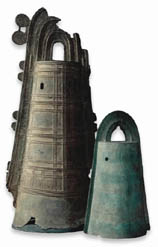

| |
Conservation
in the BM
The British Museum
has an extensive and highly proficient Conservation
Department, primarily concerned with conservation rather than restoration
of antiquities, and this Department is considered perfectly competent
to conserve most Japanese material. But even though archaeological material,
decorative metalwork, most textiles, and organic lacquer and sculpture
can for the most part be conserved using well-established British Museum
techniques, it is recognised that help, from Japan is very desirable
for the more important items in a number of categories.
Paintings
The collection of paintings and prints is conserved in a Japanese-type
environment according to traditional Japanese techniques by a team of
highly-trained persons in the Hirayama Studio (opened in 1994), a facility
unique in Europe devoted to that purpose. For this we are indebted to
Professor Ikuo Hirayama whose generosity made it possible. We are further
grateful to Professor Hirayama for helping to fund for four years (1998-2002)
a post for Mr. Mitsuhiro Abe, after his retirement from the Metropolitan
Museum of Art, New York, in order to conserve a number of difficult
and important pieces, and to teach our own conservators higher levels
of skill. Some of Mr. Abe's work is recorded on a video , Secrets
of the Screen on sale in the BM Bookshop. From 1998-2000 three hanging-scroll
paintings were conserved in Japan as part of a scheme organised by the
Agency of Cultural Affairs and The Tokyo National Research Institute
for Cultural Properties.
Swords
and Armour
There are two hundred and forty swords in the collection of the British
Museum, of which many were rusty or otherwise in poor condition when
they came into the collection. About forty are in sufficiently good
condition to exhibit, and of the remaining two hundred about half were
identified as important enough to merit urgent attention. In 1999 one
hundred and three swords were taken to Japan to be polished by the traditional
method with a generous grant from the Peter Moores Foundation.
1
- 2 - 3
3 of 3
|
|

Two
dôtaku (ritual bells), from Japan Yayoi period (about 300 BC-AD 300)
Large, bronze ritual bells
|
|
|
|